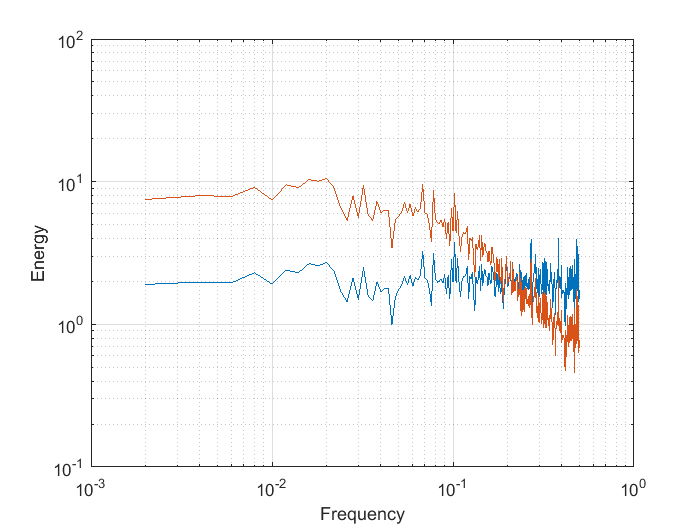
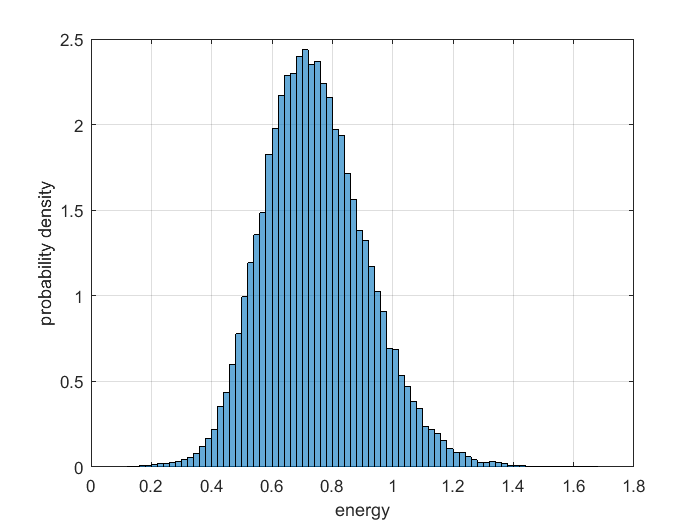

Contents
Ren_data1_week5.m
Error bars on spectra
A. Ren, November 2, 2017
create data and reshape into segments
totdatno = 10000;
disp('total data points: '); disp(totdatno);
a = randn(totdatno, 1);
b(1) = a(1);
for i = 2:length(a)
b(i) = 0.5*b(i-1)+a(i);
end
N = 500;
disp('samples in one segment: '); disp(N);
a = reshape(a, N, totdatno/N);
b = reshape(b, N, totdatno/N);
total data points:
10000
samples in one segment:
500
take fft of segments
A = fft(a);
B = fft(b);
compute amplitudes, power of spectra
amp_A = abs(A(1:N/2+1, :)).^2;
amp_A(2:end-1, :) = 2*amp_A(2:end-1, :);
amp_A = amp_A/N;
amp_B = abs(B(1:N/2+1, :)).^2;
amp_B(2:end-1, :) = 2*amp_B(2:end-1, :);
amp_B = amp_B/N;
frequency = (0:N/2)/N;
amp_B_m = mean(amp_B, 2);
amp_A_m = mean(amp_A, 2);
plot mean of spectra calculated from segments
figure('Name', 'Segmented Spectra - loglog')
loglog(frequency, amp_A_m)
hold on
loglog(frequency, amp_B_m)
grid on
ylabel('Energy')
xlabel('Frequency')
figure('Name', 'Segmented Spectra - semilogy')
semilogy(frequency, amp_A_m)
hold on
semilogy(frequency, amp_B_m)
grid on
ylabel('Energy')
xlabel('Frequency')


error bars
depend only on the number of degrees of freedom of your sample. for N
segments, the degrees of freedom is 2*N
dof = 2*size(A, 2);
err_high = dof/chi2inv(0.05/2, dof);
err_low = dof/chi2inv(1-0.05/2, dof);
figure('Name', 'Segmented Spectra - semilogy with errorbar')
semilogy(frequency, amp_A_m)
hold on
semilogy(frequency, amp_B_m)
grid on
semilogy([frequency(end-20) frequency(end-20)], ...
([err_low err_high]*amp_A_m(end-20)*10), 'k')
ylabel('Energy')
xlabel('Frequency')
Test errorbar using Monte Carlo
testnos = 200;
allrealiz_a = NaN(N, 20, testnos);
allrealiz_b = NaN(N, 20, testnos);
allrealiz_A = NaN(N, 20, testnos);
allrealiz_B = NaN(N, 20, testnos);
for ii = 1:testnos
datno = 10000;
a = randn(totdatno, 1);
b(1) = a(1);
for i = 2:length(a)
b(i) = 0.5*b(i-1)+a(i);
end
a = reshape(a, N, datno/N);
b = reshape(b, N, datno/N);
A = fft(a);
B = fft(b);
allrealiz_a(:, :, ii) = a;
allrealiz_b(:, :, ii) = b;
allrealiz_A(:, :, ii) = A;
allrealiz_B(:, :, ii) = B;
clear a b A B
end
amp_mc_A = abs( allrealiz_A(1:N/2+1, :, :) ).^2;
amp_mc_A(2:end-1, :, :) = 2*amp_mc_A(2:end-1, :, :);
amp_mc_A = amp_mc_A/N;
amp_mc_B = abs( allrealiz_B(1:N/2+1, :, :) ) .^2;
amp_mc_B(2:end-1, :, :) = 2*amp_mc_B(2:end-1, :, :);
amp_mc_B = amp_mc_B/N;
figure('Name', 'Just to Check - 120th realization')
semilogy(frequency, mean(...
squeeze( amp_mc_A(:, :, 120) ),...
2 )...
);
grid on
hold on
semilogy(frequency, mean(...
squeeze( amp_mc_B(:, :, 120) ), ...
2 )...
);
Compute the "mean" spectra for each realization (mean of 20 segments)
amp_mc_A_spectra200 = mean(amp_mc_A, 2);
amp_mc_B_spectra200 = mean(amp_mc_B, 2);
Just take the white noise spectra, look at all data together
figure('Name', 'pdf of white noise data')
h = histogram(amp_mc_A(:), 'Normalization', 'pdf');
grid on
ylabel('probability density')
xlabel('energy')
figure('Name', 'pdf of white noise data - 200 spectra')
h = histogram(amp_mc_A_spectra200(:), 'Normalization', 'pdf');
grid on
ylabel('probability density')
xlabel('energy')
hold on
x = 0:.1:400;
y = chi2pdf(x, 200);
figure
plot(x, y)
grid on
ylabel('probability density')
xlabel('random variable')
sort spectra and find values at 95%
valsperfr = squeeze(amp_mc_A_spectra200);
valsperfr = valsperfr';
valsperfr_ord = sort(valsperfr);
valsperfr_bot = valsperfr_ord(6, :);
valsperfr_top = valsperfr_ord(195, :);
valsperfr_rati = valsperfr_top./valsperfr_bot;
valsperfr_rati_m = mean(valsperfr_rati);
disp('Monte Carlo (200 realizations): ')
disp('top limit: '); disp(valsperfr_top(end-20))
disp('bottom limit: '); disp(valsperfr_bot(end-20))
disp('difference: '); disp(valsperfr_top(end-20) - valsperfr_bot(end-20))
disp('ratio: '); disp(valsperfr_rati_m)
disp('Original Spectrum (one realization): ')
disp('error bar high: '); disp(err_high*amp_A_m(end-20))
disp('error bar low: '); disp(err_low*amp_A_m(end-20))
disp('difference: '); disp(err_high*amp_A_m(end-20) - err_low*amp_A_m(end-20))
disp('ratio: '); disp(err_high/err_low);
Monte Carlo (200 realizations):
top limit:
3.0787
bottom limit:
1.2291
difference:
1.8495
ratio:
2.4024
Original Spectrum (one realization):
error bar high:
2.9617
error bar low:
1.2194
difference:
1.7422
ratio:
2.4287
Hanning Window
testnos = 200;
allrealiz_a = NaN(N, 20, testnos);
allrealiz_A = NaN(N, 20, testnos);
for ii = 1:testnos
datno = 10000;
a = randn(totdatno, 1);
a = reshape(a, N, datno/N);
a = a.* (hann(500)*ones(1, 20));
A = fft(a);
allrealiz_a(:, :, ii) = a;
allrealiz_A(:, :, ii) = A;
clear a A
end
amp_mc_A = abs( allrealiz_A(1:N/2+1, :, :) ).^2;
amp_mc_A(2:end-1, :, :) = 2*amp_mc_A(2:end-1, :, :);
amp_mc_A = amp_mc_A/N;
amp_mc_A_spectra200 = mean(amp_mc_A, 2);
figure('Name', 'pdf of white noise data with hanning window - 200 spectra')
h = histogram(amp_mc_A_spectra200(:), 'Normalization', 'pdf');
grid on
ylabel('probability density')
xlabel('energy')
hold on
valsperfr = squeeze(amp_mc_A_spectra200);
valsperfr = valsperfr';
valsperfr_ord = sort(valsperfr);
valsperfr_bot = valsperfr_ord(6, :);
valsperfr_top = valsperfr_ord(195, :);
valsperfr_rati = valsperfr_top./valsperfr_bot;
valsperfr_rati_m = mean(valsperfr_rati);
disp('HANNING Window')
disp('top limit: '); disp(valsperfr_top(end-20))
disp('bottom limit: '); disp(valsperfr_bot(end-20))
disp('difference: '); disp(valsperfr_top(end-20) - valsperfr_bot(end-20))
disp('ratio: '); disp(valsperfr_rati_m)
HANNING Window
top limit:
1.0986
bottom limit:
0.4600
difference:
0.6385
ratio:
2.3912
